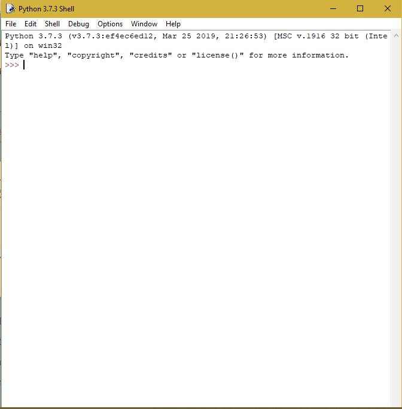

First, go to Python.org and hit download(the 3.7.3 version) for Windows (if you have a windows PC) or download for Mac (if you have a mac). Once you do this, you should see a file at the bottom of the screen labeled: python 3.7.3.exe. You will see a picture like this:

Hit install now and wait until it is done.
To run Python go to Cortanta(or whatever a Mac has) and type in IDLE. If IDLE does not show up, then go to recently added apps and open IDLE.
To start a program in IDLE do Ctrl + N or Cmd + N and you will get an untitled document.
Now do Ctrl + S or Cmd + S to save it, and save it to your desktop or whatever.
Notice that you now can run the program